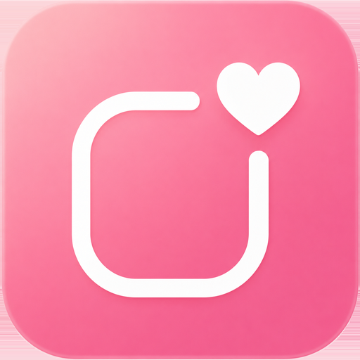

服のお店めぐりアプリ
お気に入りの服を、
めぐろう。
よく行く街に、お気に入りのお店を登録。ブランドやタグで整理して、気になった服は写真でメモ。地図を開けば、次に寄りたいお店がひと目でわかります。
App Store にて近日公開
iOS 18.0 以降 / iPhone 向け
お店をめぐる、4つの道具
-
さがす（エリア・お店）
よく行く街を「エリア」として登録し、その中にお気に入りのお店を。エリアからもお店名からもさがせます。
-
マップでめぐる
お店を地図にピン表示。お気に入りはハートのピンで強調され、次の行き先が選べます。
-
ブランド・タグで整理
お店にブランドやスタイルタグを紐づけて、「古着」「きれいめ」などで横断的に見返せます。
-
ほしいもの
気になった服は、写真つき（最大4枚）でメモ。お店・ブランド・タグに紐づけて残せます。
お店とほしい服の記録は、端末の中に
登録したお店やほしい服・写真は端末内に保存されます。アカウント登録は不要で、広告表示や広告目的のトラッキングもありません。取り扱いの詳細はプライバシーポリシーをご覧ください。
App Store にて近日公開予定。
お問い合わせ: tempuraapps.support@gmail.com